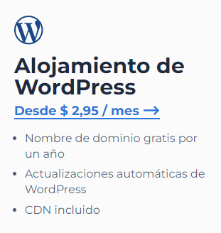
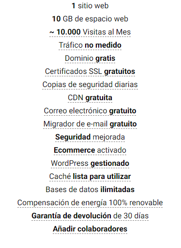
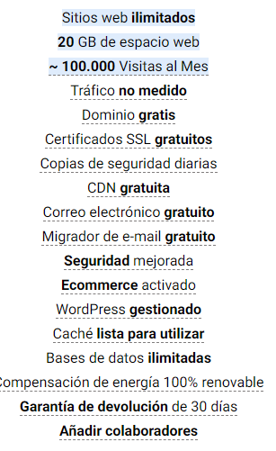

¿Qué se debe hacer antes de publicar una página web?
Antes de publicar una página web, es importante realizar una serie de pasos para asegurarte de que tu sitio esté listo para ser visto por el público.
Requisitos para publicar un sitio web
Requisitos antes de publicar una página web:
1.Registro de dominio:
• Elige y registra un nombre de dominio que sea representativo de tu sitio web.
• Puedes utilizar registradores de dominios como GoDaddy, Namecheap o Google Domains.
2. Elección de hosting:
• Selecciona un servicio de hosting para alojar tu sitio web. Hay opciones gratuitas y de pago.
• Algunos proveedores de hosting populares son Bluehost, SiteGround, HostGator y AWS (Amazon Web Services).
3. Desarrollo del sitio web:
• Desarrolla tu sitio web, ya sea utilizando un CMS (como WordPress) o codificándolo manualmente en HTML, CSS, y posiblemente JavaScript.
4. Pruebas:
• Realiza pruebas exhaustivas para asegurarte de que tu sitio web funcione correctamente en diferentes navegadores y dispositivos.
Sitios disponibles gratuitos y de pago, para publicar una página Web
Sitios para publicar una página web:
Servicios de hosting gratuitos:

·GitHub Pages:
•Enlace: Github Pages
•Costo: Gratuito para repositorios públicos.
·Netlify:
•Enlace: Netlify
•Costo: Ofrece un plan gratuito con opciones de pago para funciones avanzadas.
Costos aproximados de hosting en la actualidad
Servicios de hosting de pago:
1.Bluehost:
•Enlace: Bluehost
•Costo: A partir de $2.95 al mes (precios pueden variar), incluye dominio gratuito por un año.
2.SiteGround:
 

•Enlace: SiteGround
•Costo: A partir de $6.99 al mes (precios pueden variar).